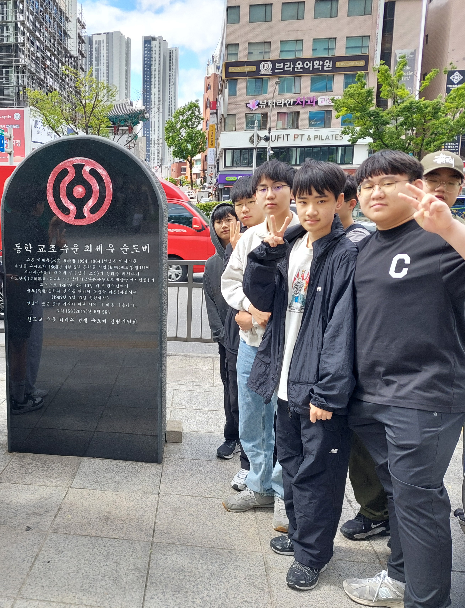

최제우 선생은 조선 후기 사회 혼란 속에서 동학을 창시한 인물로, “사람이 곧 하늘이다”라는 인내천 사상을 통해 민중의 자각과 평등의식을 고취했습니다. 그는 민중의 고통을 대변하며 종교와 정치, 철학을 아우르는 새로운 시대정신을 제시했습니다. 동학은 이후 농민운동과 항일 운동의 기반이 되었습니다.
동학의 가치를 생각해보며 조별 토론을 진행합니다. 한 조는 동학의 사회적 영향과 의의를 주장하고, 다른 조는 그 한계와 종교적 논란점을 비판합니다. 토론을 통해 동학의 역사적 의미를 깊이 있게 고찰하고, 오늘날에도 어떤 영향을 미칠 수 있는지 함께 탐구해보는 시간을 가집니다.